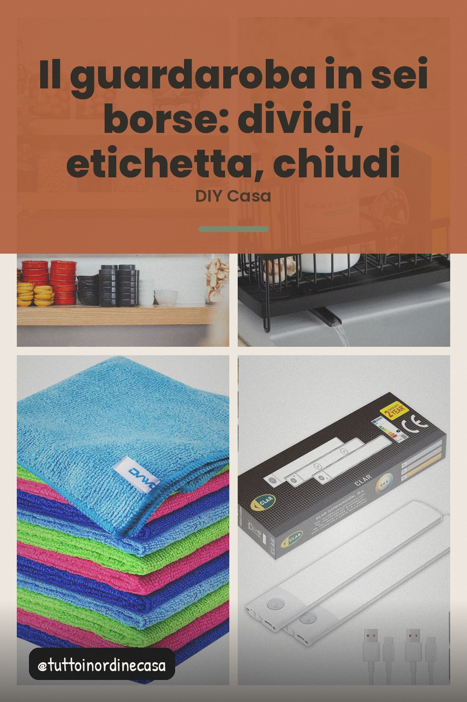

Un pomeriggio e il guardaroba smette di essere un mucchio: sei borse di tessuto, tre categorie, un'etichetta per ognuna.

Il guardaroba non si riordina da solo perché non ha categorie. Finché è un mucchio dentro l'anta, ogni mattina è una ricerca. Il trucco non è la capienza, è decidere dove va ogni cosa e poi non pensarci più.
Il numero che funziona è tre. Una per le cose che si indossano ogni settimana, una per quelle da uscire, una per le stagioni. Se ne aggiungi una quarta, la decisione di dove infilare ogni capo richiede più energia di quella che serve a cercarlo.
Le borse di tessuto pesante con manici sono l'oggetto giusto: si impilano, si tirano fuori senza rovesciare il resto e si vedono. Il vantaggio che nessuno vede subito è che una borsa chiusa ha una funzione precisa, quindi nessun oggetto finisce nel posto sbagliato per disattenzione.
L'etichetta va sulla borsa stessa, in alto, dove la vedi senza tirare fuori niente. Dentro l'etichetta dura tre lavati. Una penna a nulla e un pezzo di nastro bastano.
Questo passaggio è quello che fa paura ed è l'unico che funziona. La regola pratica: se in due anni non l'hai indossato, non ti mancherà. Metti tutto quello che esce in una busta e portalo in fondo. Ti resta metà armadio e una decisione in meno da prendere ogni mattina.
Finisci rimettendo tutto dentro le borse, nell'ordine in cui le hai divise. La prossima volta che apri l'anta trovi la stessa identica disposizione. È l'unico modo perché la divisione sopravviva alle settimane.